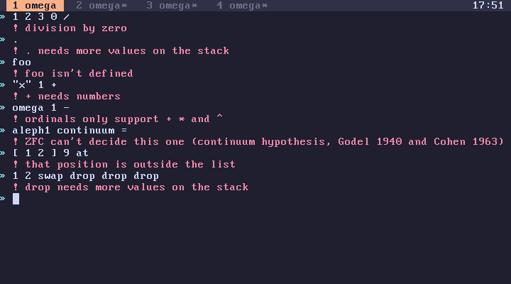

subverge
subvergeErrors
A failing word prints its message in red after a !, and the whole line is undone (transactions).

Self-explanatory
division by zero, that list is empty, that position is outside the list, a [ is never closed, a string is never closed, there is a ] with no [ before it, there is a } with no { before it, { } needs names inside it, foo isn't defined, the stack is full, rand needs a number above 0, negative powers aren't supported, aleph needs 0 or more, card needs an ordinal, foo is already a unit, a unit name is 1 to 20 characters, a unit name uses lowercase letters, digits and -, there is no room for another unit, the tab number has to be 1 to 4, cr only takes 0, 2, 3 or 4, alloc takes 1 byte up to 16M, there is no such drive, that drive is too small, it needs at least 8M, cancelled, stopped, interrupted, nothing to redo, pick needs 0 or more, sqrt needs a number that isn't negative, replace needs something to look for, rgb takes a colour from 0 to 15, rgb takes red, green and blue from 0 to 255, reverse needs a list or a string.
Explained
Errors raised with fail print the string they were given, so a message that isn't on this page probably comes from a program's own check (catching).
foo needs more values on the stack
A value was consumed earlier or never pushed. 'foo help shows what the word expects.
times needs a number, and the same for other words
Usually the arguments are in the wrong order, as in [ body ] 10 times instead of 10 [ body ] times.
+ needs numbers, len needs a string or a list, cat needs two strings or two lists
A value of the wrong type. "5" 1 + fails where "5" >num 1 + works, and cat won't join a string to a list.
not a number: foo
>num doesn't skip spaces.
map's quote has to leave exactly one value
The quote left no value or more than one. Use filter to drop items.
too many local names
More than 256 locals were live at once, almost always from recursion that binds locals at each level (flow).
this nests too deep
Usually recursion that never reaches its base case.
foo isn't defined in this tab
forget only removes your own tab's definitions (names).
there is no help for foo
Your own words have no help entries (help).
foo needs a number that fits in 64 bits
A bignum was passed to a word that needs a machine integer, such as times, at, peek or a bitwise word (numbers).
that number is too big, the limit is 2^65536
The result would have more than about 19,700 digits.
that number is too big to mix with an ordinal that way
A bignum on the right of ordinal arithmetic, as in omega 2 100 ^ +. On the left it is absorbed, so 2 100 ^ omega + is omega.
that range is too big, that splits into too many parts, that quote is too long, the brackets are nested too deep
A structure exceeded one of omega's limits.
that value can't go on the stack
Ordinary omega code can't produce this error, so please report it.
foo isn't a theme, type themes to see them
theme takes the name of one of the built-in themes as a symbol, as in 'raw theme. Themes can't be defined in omega (themes).
sort needs a list of numbers or a list of strings
sort only orders numbers, bignums included, or strings, and every item has to be the same kind. Sort a list of records by mapping it to keys first.
that string would be too long
replace produced more than 1 MiB, or join more than 64 KiB.
ran out of memory
The kernel heap is full (memory).
Infinity
that coefficient doesn't fit in 64 bits
An ordinal's coefficient grew past 2^64, as in omega 4294967296 * 4294967296 *. Coefficients are machine integers, not bignums (how infinity works).
ordinals only support + * and ^, cardinals only support + * and ^
Infinite values don't support subtraction or division (ordinals).
ordinals are never negative
A negative integer in ordinal arithmetic, like omega -3 +.
can't mix cardinals with that, can't compare a cardinal with that
Ordinals and cardinals can't be combined. Convert the ordinal with card first.
that cardinal power isn't supported, that exponent is too big to write out
The result can't be computed or can't be represented.
ZFC can't decide this one (continuum hypothesis, Godel 1940 and Cohen 1963)
The comparison depends on the continuum hypothesis, which is independent of ZFC (cardinals).
Root
foo isn't in any root unit
open and src only work on root words. Use edit for tab definitions (root).
root unchanged, ...
The edited unit failed to build, so root is unchanged and the edit was kept as a draft (root).
The JIT
foo can't be compiled, foo has no machine code
The JIT can't compile the quote, or hasn't yet. Run it twice or use compile.
Disks
you haven't installed yet, run install
save was used on the live ISO (installation).
the kernel doesn't fit in its slot, the kernel's data couldn't be copied
These only happen with a much larger custom kernel (disk layout).
writing to the drive failed
In QEMU this usually means a read-only image or a full disk on the host.
Faults
A CPU fault prints the fault, then your last line was dropped, and the tab restarts with its world intact (scheduler).